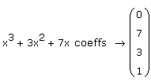

Finding the Coefficients of a Polynomial |
To return the coefficients of a polynomial with respect to a particular variable, place the cursor at the end of the polynomial and either:
- or -
Then press [Enter].
If the polynomial contains more than one variable, type a comma after "coeffs," followed by the variable with respect to which you want the coefficients expressed.
Mathcad returns a vector containing the coefficients of the polynomial. If all the exponents are positive, the first element of the vector corresponds to the constant term. If all exponents are negative, the last element corresponds to the constant term. Otherwise, Mathcad returns the coefficients for the smallest exponent to the largest, in order, with zeros for any skipped exponents in the expression, always including the constant term.
For an expression containing several variables, Mathcad internally writes the expression as a polynomial in the variable you specify after "coeffs." (This is the same operation that the keyword "collect" performs.) Mathcad then returns a vector containing the coefficients of the polynomial. The coefficients are expressions involving the variables other than the one you specify.

The first entry of the vector is 0 because the constant term of the polynomial is 0.
To return a second column containing the exponents corresponding to each coefficient, type the optional modifier "degree" after "coeffs." For example,
If the expression contains more than one variable, you must specify a variable after "coeffs." Mathcad internally rewrites the expression as a polynomial in that variable and returns a vector containing the coefficients of the polynomial. For example,
Note that internally, Mathcad first rewrites the expression as a polynomial in x. That is, it performs the same operation as the keyword "collect."
3x2·y + 5x2·y2 + 7x·y2 + x·y collect, x → (5·y2 + 3·y)·x2 + (7·y2 + y)·x
If instead you specify the variable y, the result is
Another method is to select just the variable for the polynomial (not the entire expression) and click Polynomial Coefficients on the Symbolics menu. In this case the result will not automatically update if you make changes elsewhere in the worksheet.